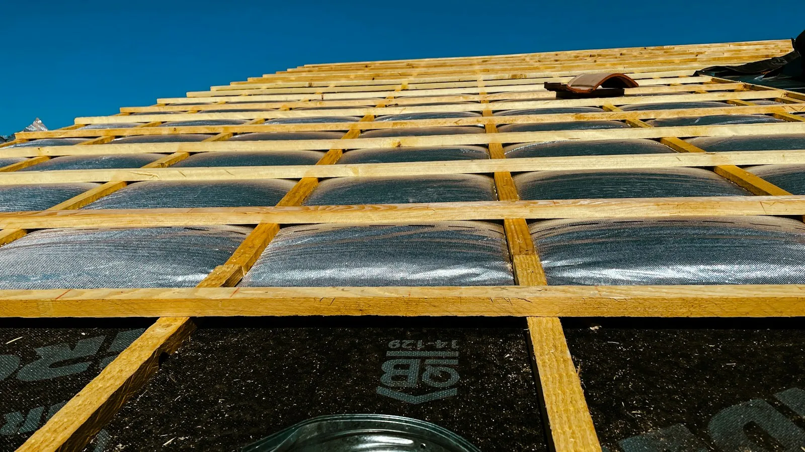
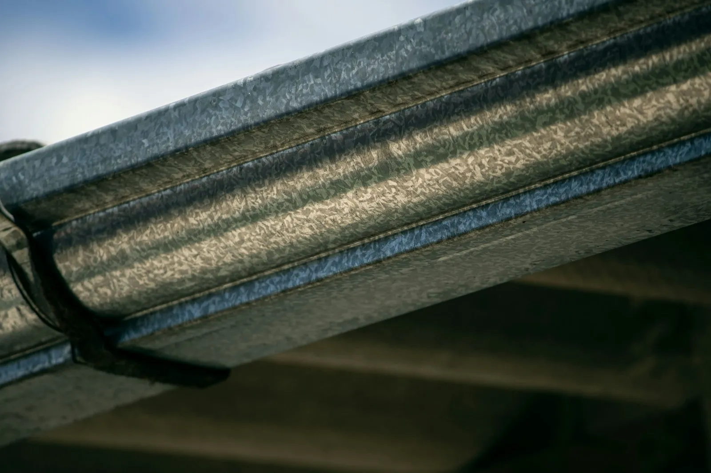
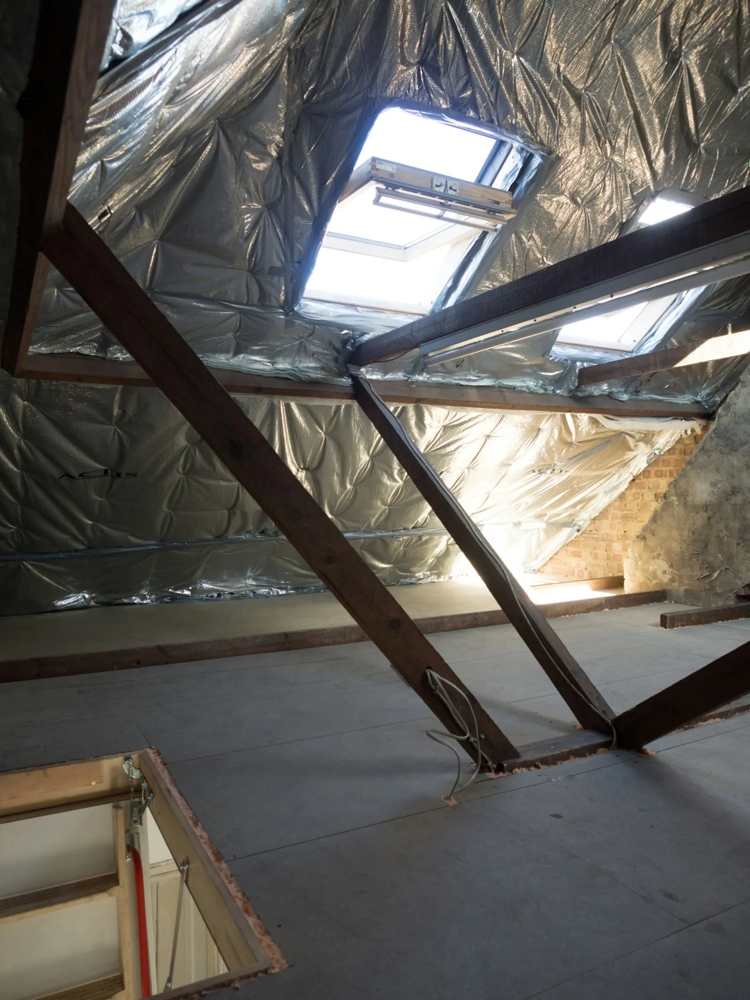

Algemene dakwerken
Van een volledig nieuw dak tot een kleine herstelling. Je hebt één nummer voor alles boven je hoofd.
01
Hellende daken
Nieuwe pannen of leien, onderdak en panlatten. Ook herstellingen van één pan.
02
Platte daken
Nieuwe dakbedekking, herstellen van lekken en netjes afgewerkte randen.

03
Dakgoten
Reinigen, herstellen of vervangen, zodat het water weer weg kan.

04
Isolatie
Een warm dak en een lagere energiefactuur, best samen met de renovatie.

05
Stormschade
Pannen eraf of een lek na een storm? Bel snel, dan wordt het eerst waterdicht gemaakt.